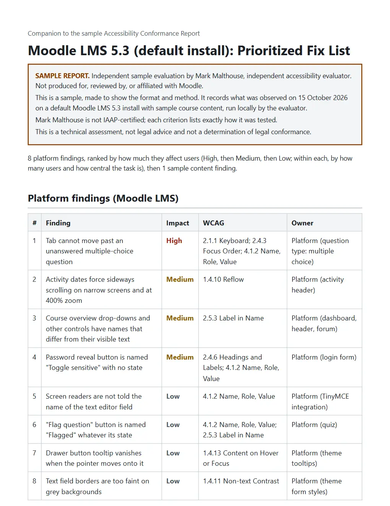

Accessibility reports (VPAT)
A customer asked for your VPAT. Here is one they can check.
I test your software and write the accessibility report (VPAT) that business, university and government customers ask for.
- Pricing
- Setup + monthly
- Turnaround
- 10 business days
- Standards
- WCAG 2.2, 508, EN 301 549
- Includes
- Fix list + re‑tests

What you get
For small software companies whose customers (companies, colleges, schools or government) want a VPAT before they sign.
The report
A VPAT 2.5 report covering WCAG 2.2 A and AA, Section 508 and EN 301 549, for up to 10 key screens or user flows. For each rule it shows the result, what I found and how I tested it, so your customer can check the work.
A ranked fix list
Every problem I found, worst first, with the screen, the rule it breaks, the proof and a suggested fix.
Kept current every month
Once your team fixes things, I test them again and update the report. Each month I check the product again and tell you about anything new.
| Criterion | Level and remarks |
|---|---|
4.1.2Name, Role, Value |
Partially Supports Platform (login): NVDA read the password reveal button as "Toggle sensitive, button" in Chrome and Firefox, and said nothing when it was pressed, so neither its purpose nor its state is conveyed. How tested: axe-core 4.13 automated scan; markup inspection (Chromium accessibility tree and DOM); keyboard-only walkthrough; NVDA 2026.2 with Chrome and Firefox. |
2.4.7Focus Visible |
Supports Each Tab stop was screenshotted focused and unfocused and the two images compared; every measured stop showed a visible change. How tested: keyboard-only walkthrough; pixel comparison of focused and unfocused states. |
| Finding | Impact | WCAG |
|---|---|---|
| Tab cannot move past an unanswered multiple-choice question | High | 2.1.1 Keyboard; 2.4.3 Focus Order; 4.1.2 Name, Role, Value |
| Activity dates force sideways scrolling on narrow screens and at 400% zoom | Medium | 1.4.10 Reflow |
| Course overview drop-downs and other controls have names that differ from their visible text | Medium | 2.5.3 Label in Name |
How each screen is tested
Five checks. The raw results are kept as evidence.
- Automated scan
- axe-core runs on every screen and state.
- Keyboard only
- Every task done without a mouse, checking focus order, visible focus and anything you can't reach or get stuck in.
- Zoom and reflow
- Pages checked at 200% zoom, at a narrow 320px width and with wider text spacing.
- Color contrast
- Text and controls measured, including text on images that scanners miss.
- Screen reader
- Key tasks run with the NVDA screen reader in Chrome and Firefox, driven by automation (Guidepup). What it says is logged and reviewed. People with disabilities do not do the testing.
Pricing
A one-time setup and assessment, then a small monthly plan that keeps the report current. Both are quoted in writing once we agree which screens to test. The report is ready 10 business days after I get a working test account.
Invoiced in US dollars by Mark Malthouse, Calgary, Canada (W-8BEN available).
Setup and assessment
- The full test of the screens we agree on
- The report, as an editable document and a PDF
- The ranked fix list with evidence
Monthly plan
- A monthly check of those screens, with a short note on anything new
- Re-tests after your fixes, and an updated report
- The report updated after big releases (up to twice a year)
- Email answers to your customers' questions about the report
6-month minimum, then cancel any time.
Not included: fixing the problems. I can quote that separately if you want.
Ask for a quoteHow it works
All in writing, so there's a record.
Email me
Tell me what you sell, which screens matter most and who asked for the report.
Agree the scope
We agree by email which screens to test. A short phone call is optional.
Get a written quote
Scope, tests, delivery date and terms. Liability is capped at the fee, and it's a technical review, not legal advice.
Pay the setup
Card invoice in US dollars. The monthly plan starts when the report is delivered.
Testing starts
You send a test account. The report and fix list arrive within 10 business days.
Read a sample first
A full sample report and fix list for Moodle LMS 5.3, tested on 15 October 2026, with the evidence behind every finding. An independent sample, not produced for, reviewed by, or affiliated with Moodle.
What this is not
Your customer will read the report closely, so these limits are in it too.
- I'm not IAAP-certified. Each result says exactly how it was tested, so anyone can check the method.
- It's a technical review, not legal advice, and it doesn't decide legal compliance.
- An AI agent does most of the testing under my direction, and I review every finding. People with disabilities don't test unless we arrange that separately.
- It covers the screens we agree on. It doesn't promise there are no other problems.
Who a VPAT is for
Customers ask for it because the software they buy has to work for everyone.
Questions
Anything else, email me.
What is a VPAT, and what is an ACR?
The VPAT (Voluntary Product Accessibility Template) is a blank form from the Information Technology Industry Council. Filled in for a product, it's called an Accessibility Conformance Report (ACR). Most buyers just say VPAT.
Why are customers asking for one?
Public colleges, schools and government agencies have to make the technology they use accessible, and a 2024 U.S. Department of Justice rule (ADA Title II) made the requirements more specific. Many now check a vendor's report before they buy or renew.
Some larger companies ask too, especially ones that sell to government or have customers in the EU, where the European Accessibility Act has covered many consumer digital services since June 2025.
What do you need from me?
A test account with normal user access (a test copy is fine if it matches the live product), the screens your customers care about most, and someone to answer emails during the 10 days.
How long is a report valid?
There's no official expiry. Many buyers want one from the last 12 to 24 months, and a new one after a big redesign. The report shows the product version and test date. On the monthly plan I keep it up to date.
Do you fix the problems too?
The fix list includes suggested fixes. Doing the fixes is quoted separately, only if you ask.
Who does the testing?
I run the business and approve everything that goes out. An AI agent does most of the testing and writing under my direction, and every finding is backed by evidence you can check.
Contact
Email is best. Tell me what you sell and who asked for the report, and I'll reply with questions or a quote.
mark@markmalthouse.com Mark MalthouseIndependent accessibility evaluator
Calgary, Alberta, Canada